www.storageconfiguration.com February 2017–August 2017
To help users create custom metal cabinets, we built a web app for Stanley Black & Decker’s Lista brand. We designed the web app for reuse across five other SBD’s brands that sell metal cabinets.
This case study focuses on the execution phase of the project. How we took our extensive research from the discovery phase of the project and built a key prototype. We iterated on the prototype, released a minimum viable product, then a version 1.5 to the public.
In the discovery, we’d talked to SBD stakeholders and customers. We had uncovered key features and functionality that these users would need. The next step was to sort and map out where these features could exist and create a system.
There was an existing configurator on the site, originally built as a tool for salespeople to place cabinet orders, it was not intuitive or user-friendly. It did give us a baseline for what features had to be in the new configurator, but we needed to figure out the system.
I realized that we’d need three critical areas within the system: an area to be the entry point for new users; an area to configure cabinets; and an area to store multiple cabinet configurations.
I created a site flow map to figure this out — it’s a hybrid of a sitemap and a user flow. With the system mapped out we were able to write user stories for these areas and the functionality they’d need. The site flow map helped us prioritize the functionality within the configurator and how it would fit into the product roadmap.
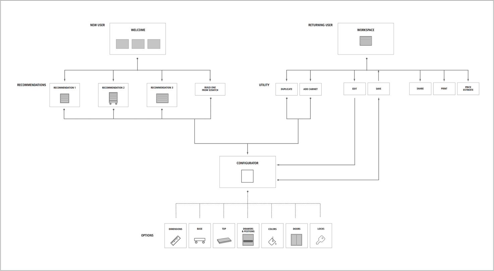
Site flow map: showing how new and returning users would enter the configurator.
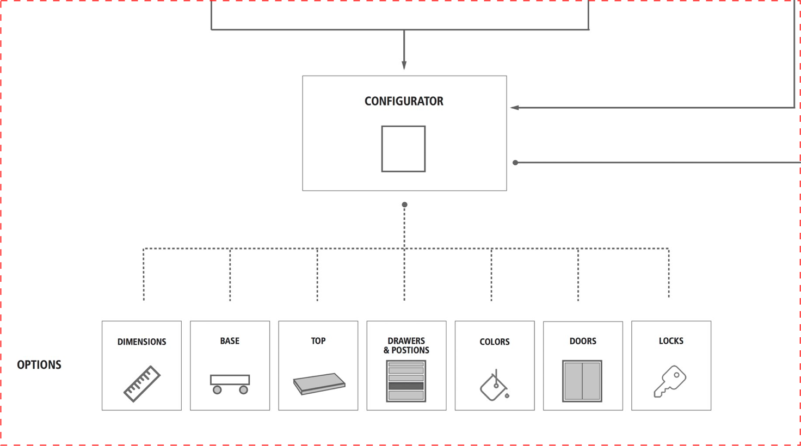
Close up of the configurator section showing the essential functionality and options.
Our first design constraint was we needed a working prototype to present at an important board meeting in mid-April. For the sake of this key demo, I decided that we had to forgo our mobile-first design philosophy and design the desktop first.
After numerous client presentations, I’d realized that while designing for mobile first was a best practice for prioritization of information; it made for a poor demo. It was much harder for stakeholders to understand the mobile experience when you show it on a large screen. I found it was always better to show the desktop experience and then the mobile—or better yet to create a prototype and load it onto an actual mobile device.
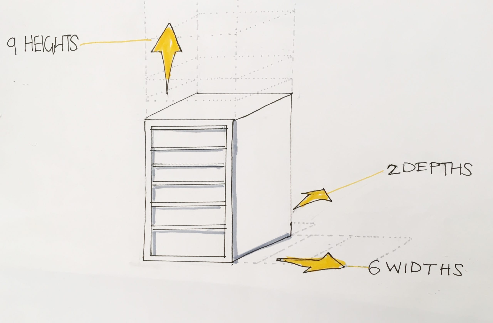
UX InVision prototype 3/23/2017
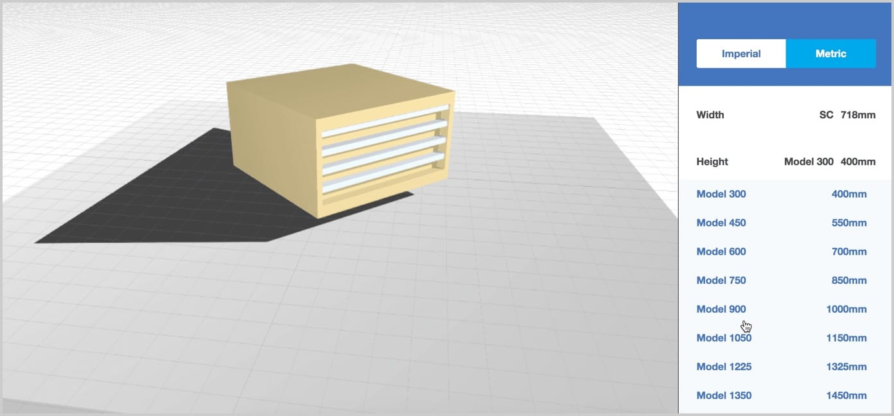
Dev prototype: Sprint 1 – 3/10/2017
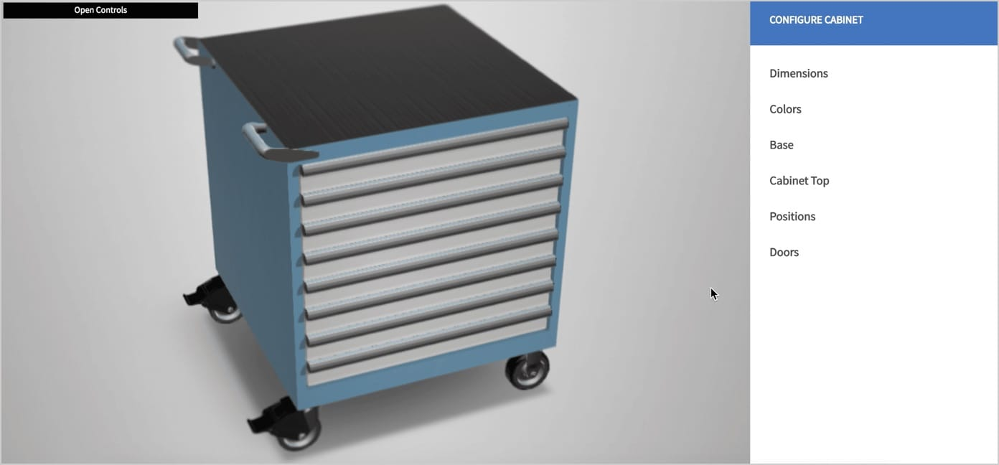
Dev prototype: Sprint 2 – 3/21/2017
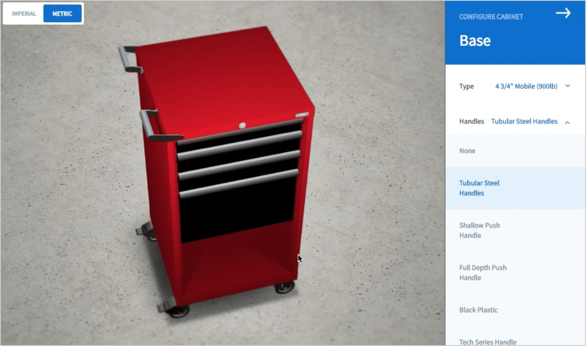
Dev prototype: Sprint 3 – 4/10/2017
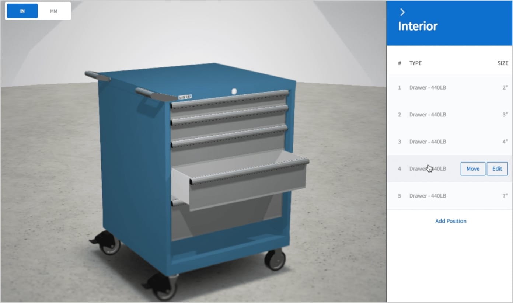 [caption] Dev prototype: Sprint 4 – 4/21/2017
Once we’d successfully demoed our prototype, we took our desktop-centric design and rethought it for a mobile context. We had already designed for touch interfaces, but the constraints of mobile made us reconsider some of our components.
On mobile, it was important for our users to be able to see the changes while they were interacting with the user interface. We want the menu to use less than 40% of the height of the screen.
The most significant change to the user interface was to replace the accordions with tabs. Tabs made better use of the space on mobile and allowed users to see what options were available without having to expand them.
Tabs made sense for the mobile design and performed better in user testing. When I switched to tabs from accordions, I also revised the categories in the main menu of the configurator. By using tabs, I was able to group similar items. I was able to reduce the number of menu items on the main menu from nine to five.
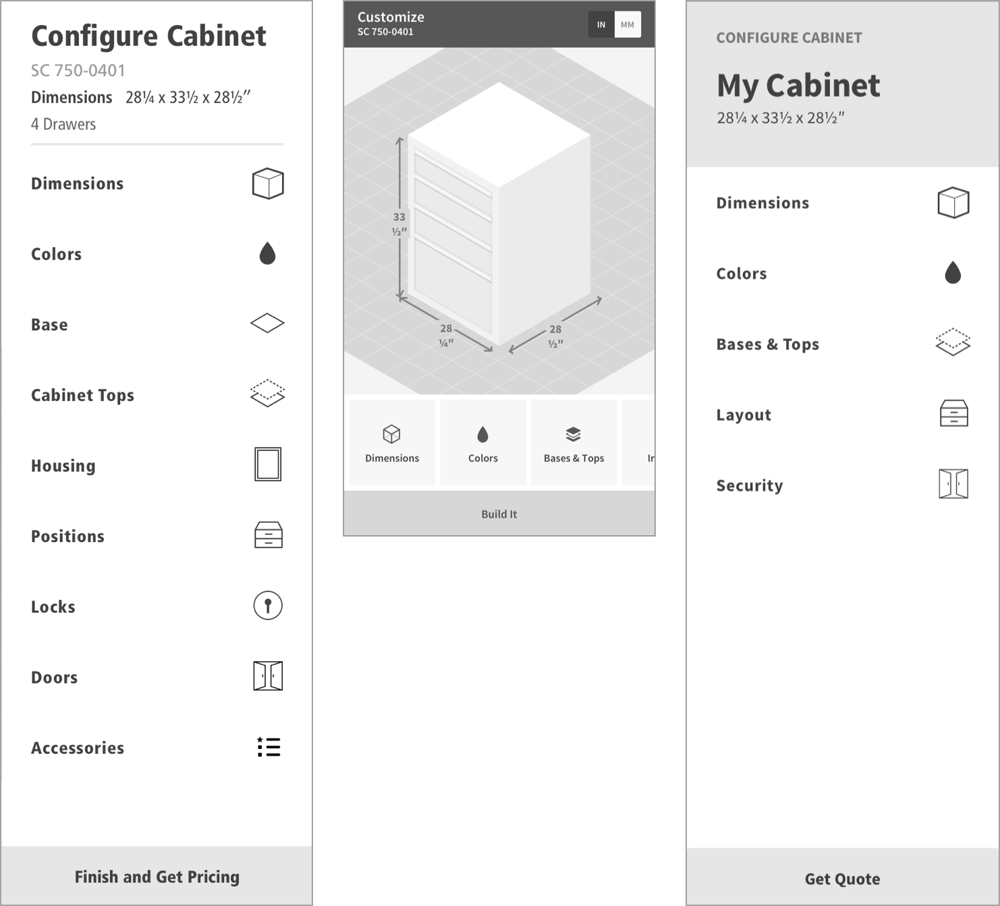
Main Menu: Prototype, Mobile, Version 1.0
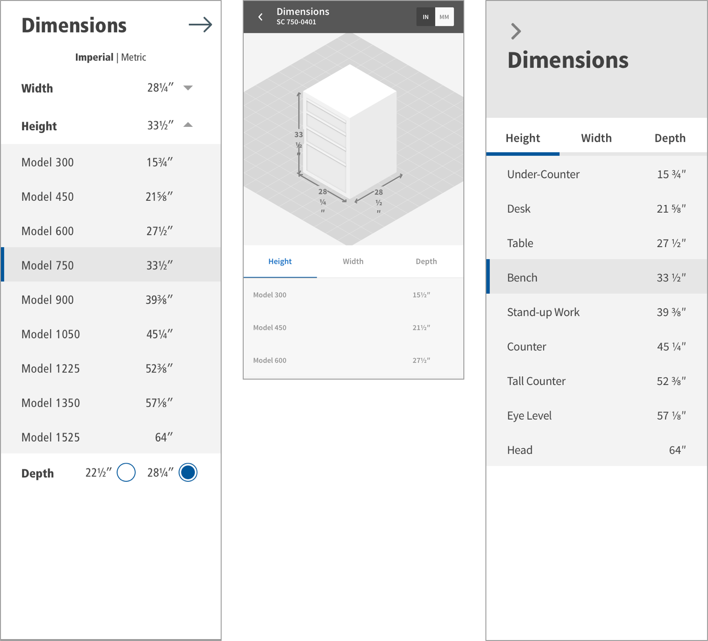
Height Menu: Prototype, Mobile, Version 1.0
We did user testing on their existing configurator and the prototype. Users failed to build a cabinet in the current configurator. The controls and labels were confounding to many of our test users. The prototype performed much better, and users were able to complete building their custom cabinet.
In the prototype, we noticed where we used accordions they were sometimes overlooked. Where we had tabs, users saw all the options right away. We revised the user interface, and tabs became the dominant design pattern.
For the demo, we used hard-coded data to populate the screens. We now had to build an API to provide real data. The API also served as the rules engine. The rules engine informed the user when there was a conflict between the options they had chosen and offered solutions on how to fix that issue.
We decided that we’d launch the new configurator with the ability to configure one cabinet at a time and get a summary. I added annotations to the UX prototype to document these interactions.
View the UX: Release 1.0 prototype
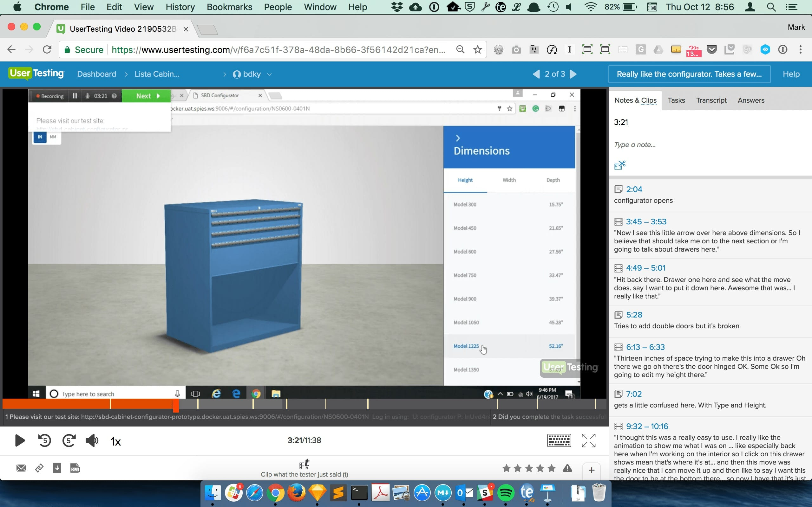
While user testing the prototype: we found that tabs worked better than accordions.
InVision prototype of the UX. It was used to help document the 1.0 release.
To configure more than one cabinet at a time, we needed an area where users could access the configurations of all their cabinets.
This area became the My Project space. We wanted to users to be able to visualize their cabinets and get a sense of their sizes next to each other. We wanted them to be able to perform some global actions on all of their cabinets: changing colors and setting keying options. Users can share their projects with others for review. Users can now get a quote based on their project with one or more cabinets.
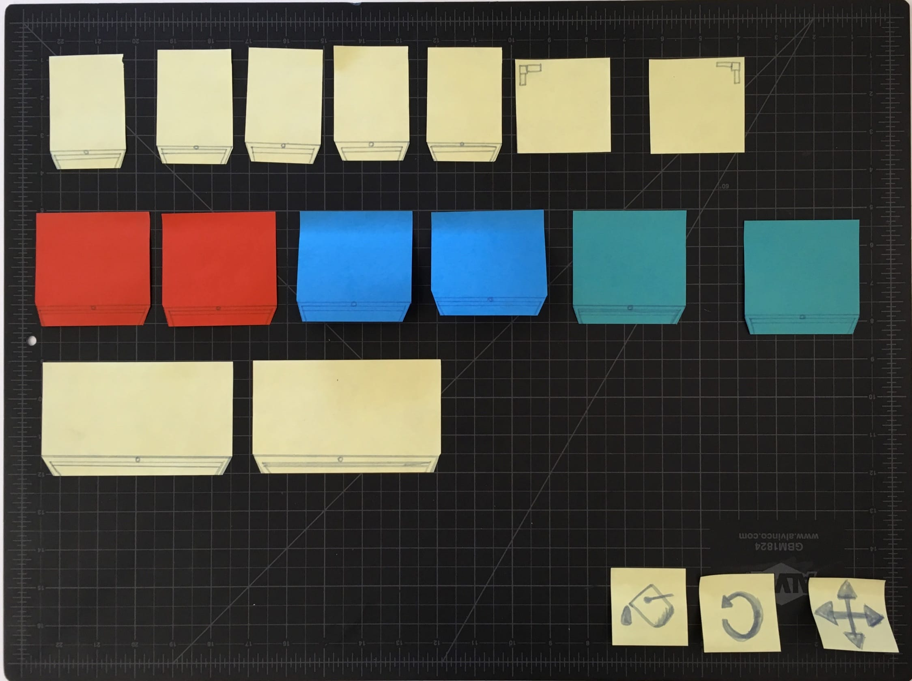
We went through 4 major iterations to get to this solution * 3D view with a tray to switch between configurations * Overhead 3D view where you could move the cabinets around * Overhead view with tiled images of the cabinets * Using Cards where we could show supporting information
After exploring each of these iterations, we ended up using a wall planning view on the top and a card view on the bottom.
My Project: wall planning feature with cards below.
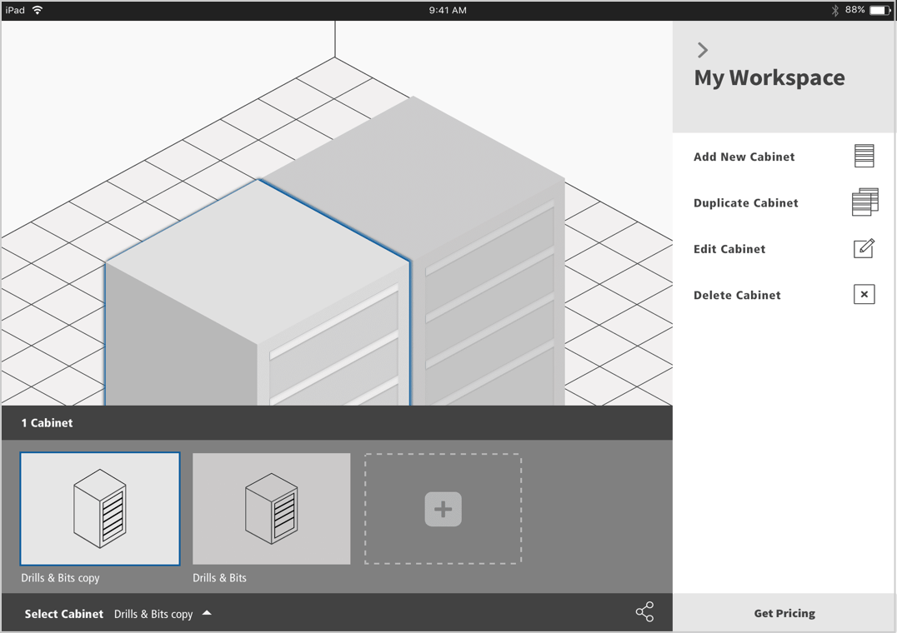
Alternative 1: 3D with Tray
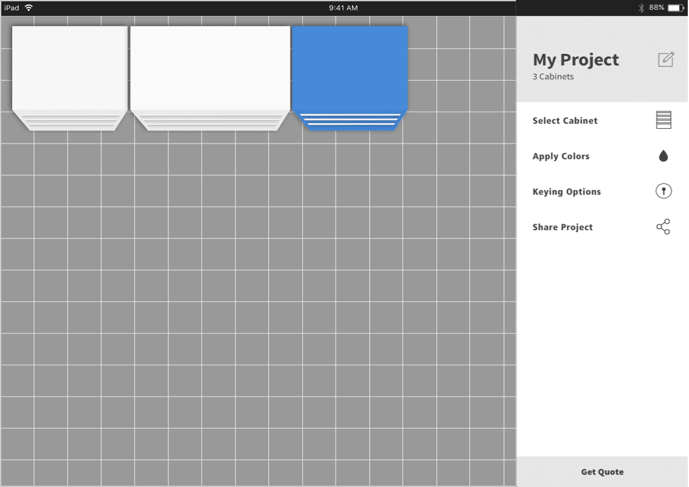
Alternative 2: Overhead 3D
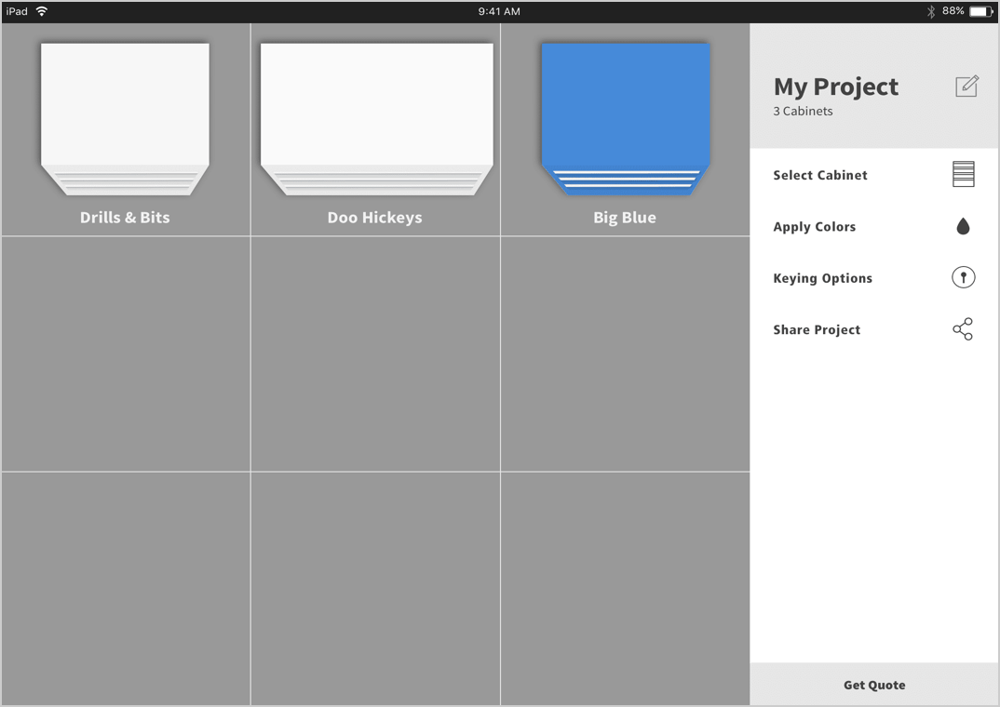
Alternative 3: Overhead tiles
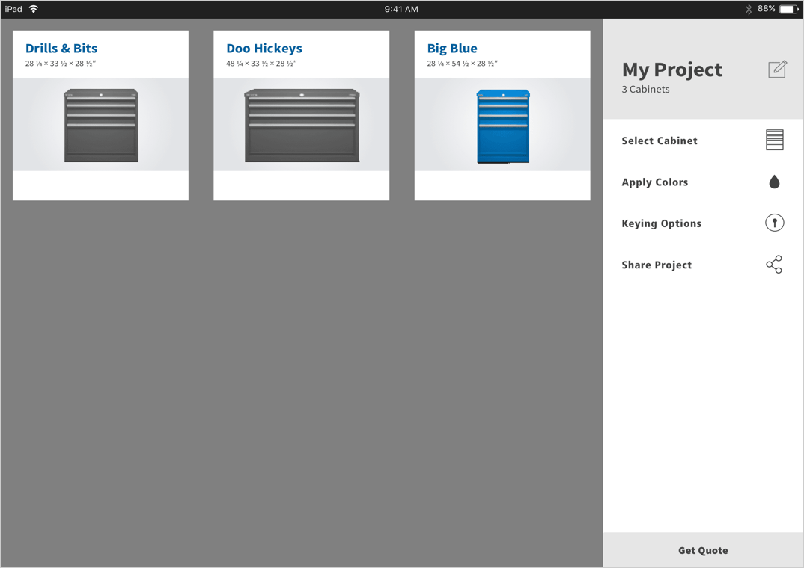
Alternative 4: Cards